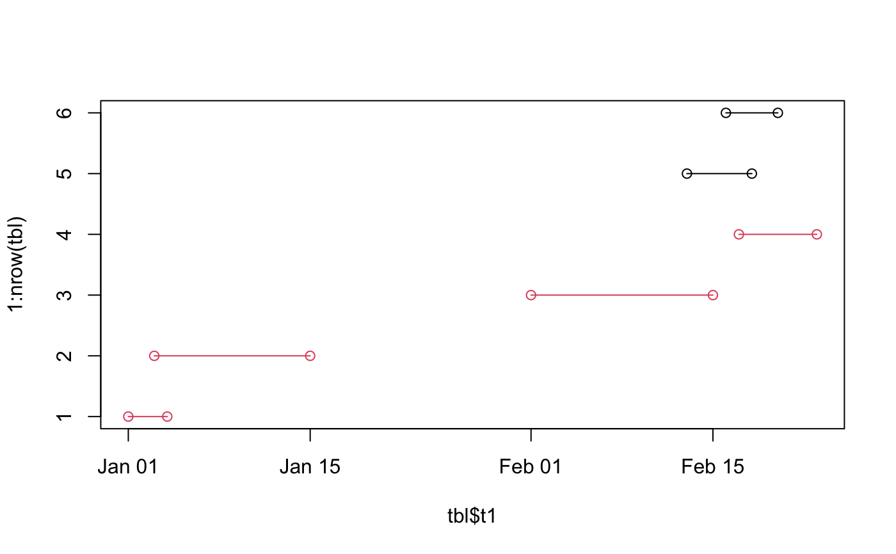

Creates a sequence number for each set of overlapping intervals
time_overlap(start, end)
| start | start of the interval. Can be date or numeric, but must be the same as |
|---|---|
| end | end of the interval. Can be date or numeric, but must be the same as |
tbl <- tibble::tribble( ~id, ~t1, ~t2, "A", "01/01/2020", "04/01/2020", "A", "03/01/2020", "15/01/2020", "A", "01/02/2020", "15/02/2020", "A", "17/02/2020", "23/02/2020", "B", "13/02/2020", "18/02/2020", "B", "16/02/2020", "20/02/2020" ) %>% dplyr::mutate_at(dplyr::vars(t1,t2),lubridate::dmy) plot(x=tbl$t1,y=1:nrow(tbl),col=(tbl$id=="A")+1, xlim = range(tbl$t1,tbl$t2))tbl$seq <- time_overlap(tbl$t1,tbl$t2) tbl %>% dplyr::group_by(id) %>% dplyr::mutate(seq = time_overlap(t1,t2))#> # A tibble: 6 x 4 #> # Groups: id [2] #> id t1 t2 seq #> <chr> <date> <date> <dbl> #> 1 A 2020-01-01 2020-01-04 1 #> 2 A 2020-01-03 2020-01-15 1 #> 3 A 2020-02-01 2020-02-15 2 #> 4 A 2020-02-17 2020-02-23 3 #> 5 B 2020-02-13 2020-02-18 1 #> 6 B 2020-02-16 2020-02-20 1